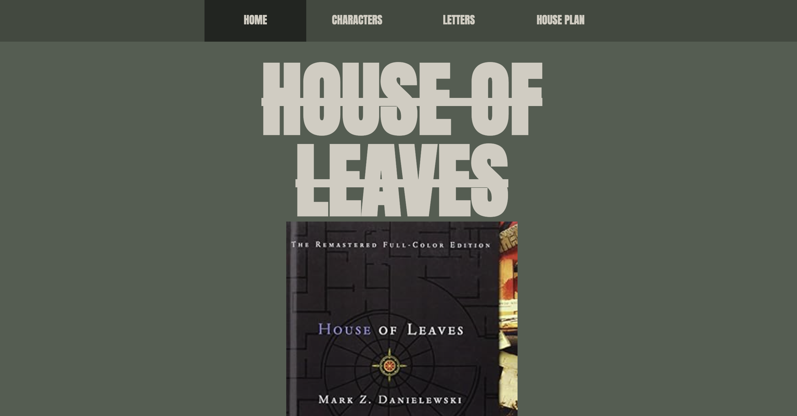
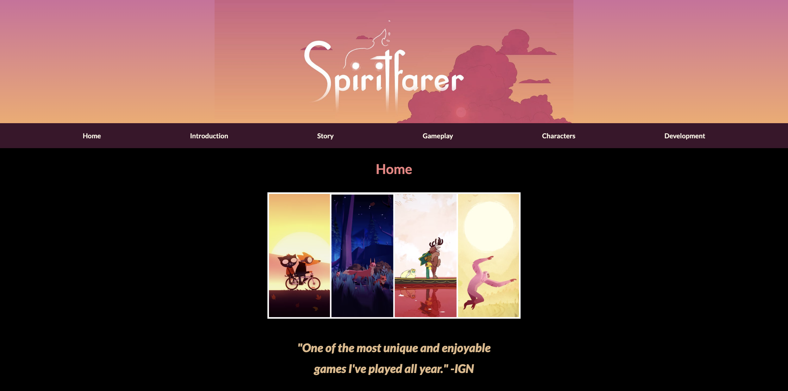

Description of the recipe, and my design.
Designed by Kathy Pan and Creative Directed by Sophie Difazio, this site explores the book House of Leaves.
Designed by Lucia Folsey and Creative Directed by Kathy Pan, this site explores the popular videogame Spiritfarer.